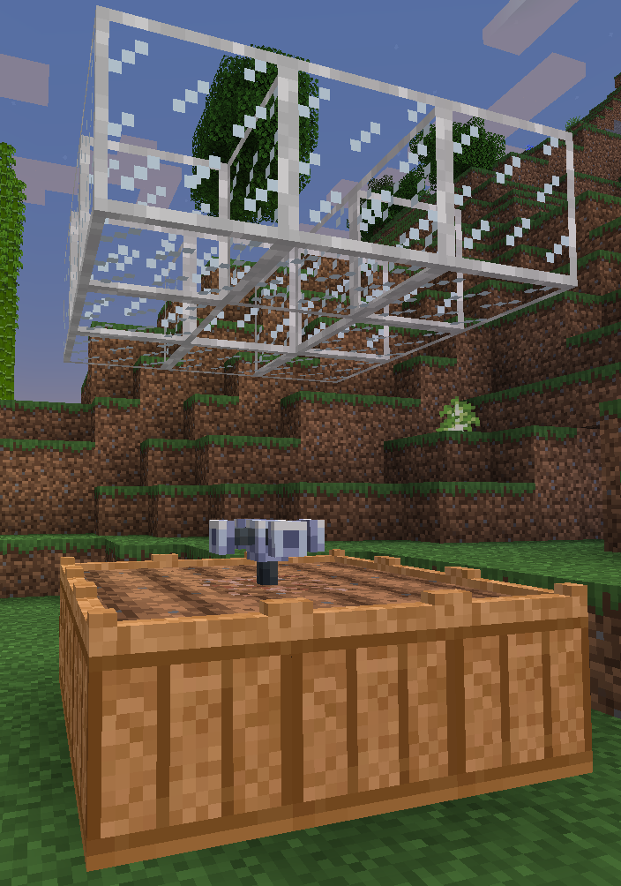
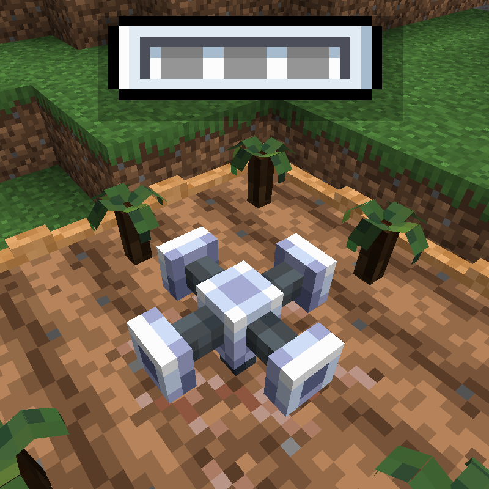
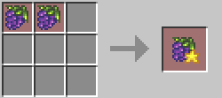
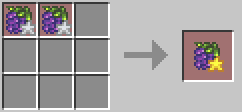
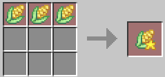
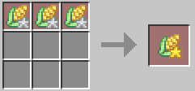
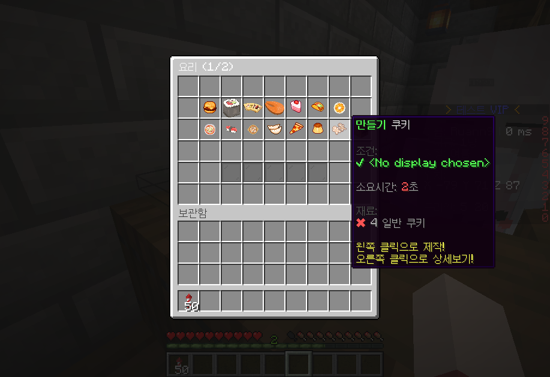
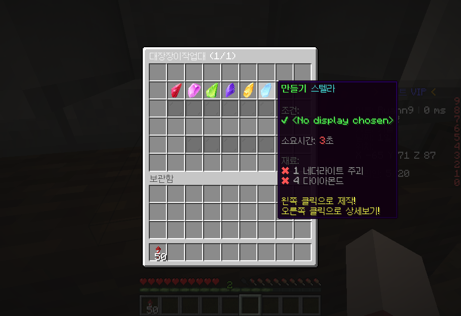

-
농부
▪️ 농부로 전직을 하면 전용 도구로 농사를 시작할 수 있습니다.
▪️ 상점에서 농부 관련 도구인 화분, 스프링클러, 비닐하우스, 씨앗 등을 구매할 수 있습니다
▪️ 농부는 직업 업그레이드 시 아래와 같이 업그레이드된 농사도구를 사용할 수 있게 됩니다.
농부 전직 화분통 스프링클러 물뿌리개 하급 농부 200개 X 철 물뿌리개 중급 농부 400개 금 스프링클러 금 물뿌리개 전문 농부 600개 고급 스프링클러 자수정 물뿌리개 -

농부 도구 설치 방법
스프링클러 저장공간
-
금별 농작물 조합방법
-
▪️ 포도, 마늘, 고추 금별 조합법
 ▪️ 옥수수, 용과, 토마토 금별 조합법
 
-
계절별 농작물
▪️ 동글 서버에는 총 6가지의 커스텀 농작물이 존재합니다.
▪️ 아래에 해당하는 계절에만 농작물을 심을 수 있으며, 계절에 상관없이 재배를 하기 위해서는 비닐하우스 설치해야 합니다.
봄 : 고추, 토마토, 용과
여름 : 마늘, 고추, 옥수수
가을 : 마늘, 옥수수, 포도
겨울 : 포도, 토마토, 용과
-
화분
▪️ 화분통은 커스텀 작물을 심을 때 사용합니다. (화분없이는 커스텀 작물을 재배할 수 없습니다.)
▪️ 곡괭이,도끼를 이용하여 회수 할 수 있습니다.
▪️ 화분당 물 저장 공간 3칸 입니다.
-
스프링클러
▪️ 매일 06:00시에 스프링클러가 작동합니다.
▪️ 스프링클러 설치 후, 물뿌리개를 이용하여 우클릭으로 물을 채울 수 있습니다.
철 스프링클러 : 물 저장 공간4 / 범위 3*3
금 스프링클러 : 물 저장 공간5 / 범위 5*5
고급 스프링클러 : 물 저장 공간3 / 범위 7*7
-
물뿌리개
▪️ 물뿌리개를 들고 물에 우클릭하면 물뿌리개에 물을 담을 수 있습니다.
▪️ 물뿌리개를 들고 화분에 우클릭하면 화분에 물을 채울 수 있습니다.
철 물뿌리개 : 물 저장 공간3 / 범위 3*3
금 물뿌리개 : 물 저장 공간3 / 범위 5*5
자수정 물뿌리개 : 물 저장 공간5 / 범위 7*7
-
허수아비
▪️ 까마귀로부터 농작물을 보호합니다.
▪️ 보호 범위는 한 청크입니다.
-
비닐하우스
▪️ 계절에 상관없이 농작물을 심고, 수확할 수 있습니다.
▪️ 비닐하우스의 유효범위는 Y축 10입니다.
-
요리사
▪️ 요리사로 전직을 하면 전용도구로 요리를 만들 수 있습니다.
▪️ 상점에서 요리사 요리도구를 구매할 수 있습니다.
▪️ 요리도구는 원하는 곳에 설치 가능합니다.
▪️ 요리사는 커스텀 물고기, 커스텀 농작물, 바닐라 농작물을 재료로 사용해 요리를 할 수 있습니다.
-
요리도구 사용방법
1. 요리도구를 설치 후 우클릭을 하면 요리창이 열립니다.
2. 각 요리에 커서를 올리면 요리재료를 확인 할 수 있습니다.
3. 인벤토리에 요리재료를 넣어두고 요리할 메뉴를 선택해 클릭하면 요리가 시작 됩니다.
4. 요리가 시작되면 대기열에 추가가 되며 타이머가 돌아갑니다. 타이머가 끝나면 완성된 요리를 꺼낼 수 있습니다.

-
대장장이
▪️ 대장장이로 전직을 하면 광물을 모아 보석을 만들 수 있습니다.
▪️ 상점에서 대장장이 작업대를 구매할 수 있습니다.
▪️ 대장장이 작업대는 원하는 곳에 설치 가능합니다.
▪️ 대장장이가 만든 보석으로 연금술사가 룬을 제작할 수 있습니다.
-
대장장이 작업대 사용방법
1. 대장장이 작업대를 설치 후 우클릭을 하면 작업창이 열립니다.
2. 각 보석에 커서를 올리면 보석재료를 확인 할 수 있습니다.
3. 인벤토리에 보석재료를 넣어두고 제작할 메뉴를 선택해 클릭하면 보석제작이 시작 됩니다.
4. 보석제작이 시작되면 대기열에 추가가 되며 타이머가 돌아갑니다. 타이머가 끝나면 완성된 보석을 꺼낼 수 있습니다.

-
연금술사
▪️ 포션을 만들어 상점에 판매하거나 포션과 대장장이의 보석을 합쳐 버프룬을만들어 유저에게 판매하여 수익을 얻는 직업입니다.
▪️ 연금술사로 전직을 하면 포션과 대장장이의 보석을 조합하여 룬을 만들 수 있습니다.
▪️ 상점에서 연금술사 작업대를 구매할 수 있습니다.
▪️ 연금술사 작업대는 원하는 곳에 설치 가능합니다.
▪️ 추후나올 RPG컨텐츠에 강합니다.
-
연금술사 작업대 사용방법
▪️ 준비중 입니다.